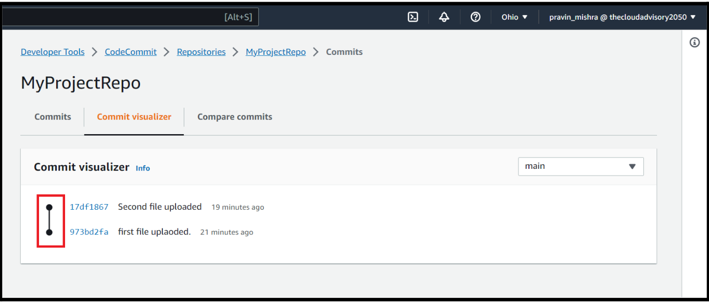
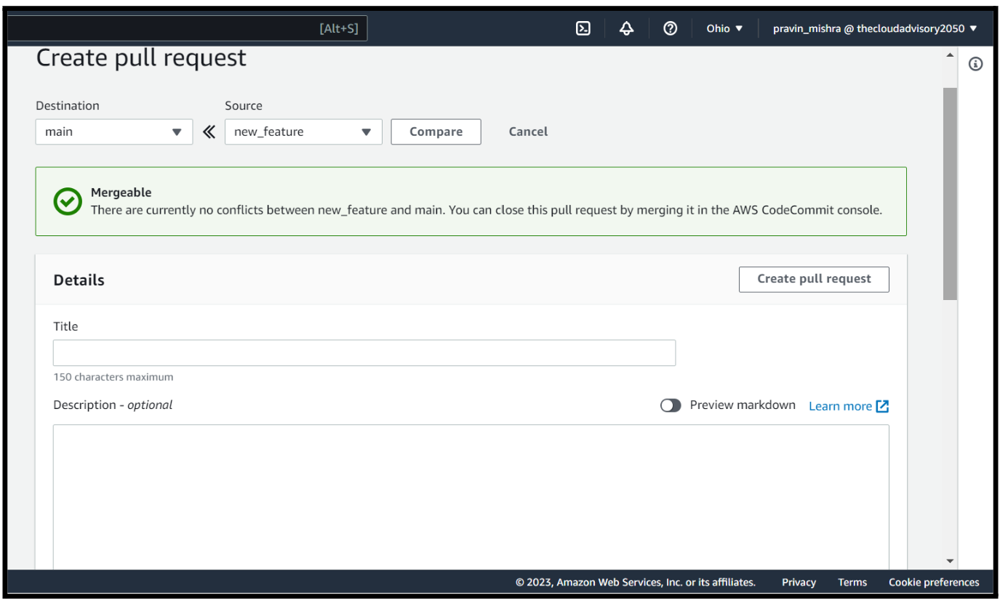

Ever wished for a tool to correct the past mistakes or incidents?
You may not get a tool in real life, however this is very much possible in the world of software.
When it comes to working on software development projects, especially in a team setting, we often have to collaborate and work together with the team members.
As many brains are involved, you need to have a mechanism to keep the things organised and smoothly running.
So here comes the AWS CodeCommit tool, to take care of all the source code-related management in a software development project.
Use of AWS CodeCommit
Here’s how it will help you with your source code management task:
Version Control:
In any software project, you'll be writing and modifying code files. With time, your code evolves. But what if you want to go back to a previous version? Or if something goes wrong, how do you fix it? A CodeCommit repository allows you to track changes over time, maintain different versions of your code, and easily revert back to a previous state if needed. This is crucial for preventing accidental code breakages and for understanding how your code has changed over time.
Collaboration:
Software projects are rarely done alone. You'll be working with a team of developers, each contributing their part. CodeCommit provides a central place where everyone can upload their code changes. This eliminates the need to send files back and forth via email or other methods, preventing version conflicts and ensuring everyone's work is combined in a structured manner.
Code Reviews:
In a professional setting, code quality is essential. CodeCommit integrates with tools that enable code reviews. Team members can suggest changes, point out potential issues, and ensure that the code follows best practices. This leads to higher-quality code and a chance to learn from more experienced developers.
Backup and Recovery:
Let’s say your local computer crashes or you accidentally delete an important file. If your code is stored only on your computer, it could be lost forever. CodeCommit stores your code securely in the cloud, acting as a backup. You can always retrieve your code, even if your local copy is lost.
Remote Access:
In today's global world, teams might be spread across different locations. CodeCommit allows developers to access the code repository from anywhere with an internet connection. This is particularly important if your team is working remotely or collaborates with people in different time zones.
Learning Industry Tools:
Familiarity with tools like CodeCommit gives you an edge in the job market. Many companies use version control systems like this, and having experience with such tools demonstrates your ability to work collaboratively in a professional software development environment.
So why delay, let quickly go to the AWS management console and create an AWS CodeCommit repository and look out for all the related features to manage our source code.
Creating an AWS CodeCommit Repository
Creating an AWS CodeCommit repository involves several steps. CodeCommit is a fully managed source control service that makes it easy for teams to host secure and scalable Git repositories.
Let’s go to the AWS Management console.
Open AWS CodeCommit Console:
Type ‘CodeCommit’ in the search bar. Click on the ‘CodeCommit’ option. You can see the AWS CodeCommit console.
There is a navigation panel on the left side that includes options to navigate to various AWS developer tools like CodeCommit, CodeArtifact, CodeBuild, CodeDeploy, and CodePipeline.
2. Create Repository
On the main console, click on the ‘Create repository’ button.
In the ‘Repository settings’, give a ‘Repository name’. Let me give it a name ‘MyProjectRepo’. Add a description and a tag to this resource. By adding a description to a repository, you specify the purpose and function of the repository. This helps the other team members to collaborate, manage, and organise better.
By adding tags while creating a resource in AWS, we can organise, manage, and track our resources within our AWS account more easily. Tags are key-value pairs that we can attach to our resources to provide metadata, which can be used for cost allocation, resource management, and other purposes.
Tags are like labels that help you organise and keep track of your resources. For example, you can add a tag that says "Department: Marketing" or "Project: Website Redesign". This can help you see how much each department or project is spending on AWS resources and make sure you're using them efficiently. Tags can also help you automate certain tasks or generate reports that give you insights into your AWS usage and costs.
If your repository contains Java or Python code, and you want to have CodeGuru Reviewer analyse that code, enable this checkbox.
Let me quickly explain to you what CodeGuru is and what it is used for?
CodeGuru is an AWS tool that helps developers write better source code by identifying issues and recommending improvements. It uses machine learning to analyze your code and suggest optimizations that can improve its performance, security, and efficiency. CodeGuru provides a feature called CodeGuru Reviewer. It helps you catch bugs and security issues before they become problems.
Thus, CodeGuru can save developers time and help them write more reliable and efficient code. That’s why in case when we use Java or Python code, we will enable CodeGuru Reviewer to help us find the bugs.
For now, I do not require this, so I will disable this tool.
Click on the ‘Create’ button.
3. Add Files to Repository
Now let’s add files to our repository.
We have to add source code files to this repository. We can do this with any of the 3 methods.
a. Create a File
Click on ‘Create file’. You will write your file contents here, a branch is automatically created for you. This branch is called "main," and it becomes the main/default branch for your repository. So any files you create in the console will be added to this branch.
b. Upload a File
Then the second method is uploading a file from our local computer using the CodeCommit console.
If you have a file on your computer that you want to add to your repository, you can upload it through the CodeCommit website. Just like before, if this is the first file you're adding to the repository through the console, a branch called "main" is created for you, and it becomes the default branch for your repository.
c. Using Git Client
Then the third method is using a Git Client.
Git is a tool that helps to manage versions of files. You will use a Git client, i.e., Git terminal, to clone your CodeCommit repository on your computer. Once you have the repository on your computer, you can add, commit, and push files to the CodeCommit repository. When you do this, a branch is automatically created for you, and it becomes the default branch for your repository. The name of the branch is usually chosen by your Git client, but it's a good idea to configure it to use "main" as the name for the initial branch.
Now let’s upload a file from my local computer using the first method.
I have a sample source code in my Github account.
I will download it first to my local computer.
Click on ‘Choose file’.
Select any one file from the downloaded repository and upload it to CodeCommit repository.
Enter details in the ‘Commit changes to main’ section.
Then click on ‘Commit changes’.
Upload a second file in the main branch in the same manner.
So now I have two files in the repository.
4. Browse Contents of Your Repository
Now click on the repository ‘MyProjectRepo’ to see the contents of the repository. You can see that these two files belong to the default branch of your repository. If you want to see a different branch or check the code at a specific tag, you can select the branch or tag from here.
To view the contents of the file click on the file.
To browse the commit history, click on the ‘Commit’ button. The latest commit is at the top of the list.
To view differences between any two commits, click on the ‘Compare commit’ tab.

Then we can also see a graphical representation of all the commits, click on ‘Commit visualizer’. To see more details of any particular commit, click on this black dot.
5. Create and Collaborate on Pull Request
When you work in a team for any repository, you can collaborate with other team members on code and review changes. You can create a pull request so that other users can review and comment on your code changes in a branch.
A pull request is a request to merge changes made in one branch of a code repository with another branch. Pull requests provide a way for developers to collaborate on code changes and ensure that code changes are reviewed and tested before they are merged into the main branch.
When a developer creates a pull request, they can specify the source branch (the branch with the changes to be merged) and the target branch (the branch where the changes will be merged).
Once a pull request is created, reviewers can leave comments on the changes, request additional changes, or approve the changes. Once all reviewers have approved the changes, the pull request can be merged into the target branch.
So let’s make some changes in our first file. We will first create a new branch, make changes in that branch and then try to merge these changes into the main branch.
So go to ‘Branches’ on the left navigation panel.
Click on the main branch name and then click on the ‘Create branch’ button.
Give a name to this new branch as ‘new_feature’ and select the branch from which it has to create this new branch. In this case, it is the main branch, and then click on ‘Create branch’.
So here we can see the list of main branches and sub-branches.
Now we will make changes in this new branch.
Click on the new branch ‘new_feature’.
Open the file of this ‘new_feature’ branch. Click on the ‘Edit’ button.
Make some changes to this file.
Then commit changes to this new branch and click on ‘Commit changes’.
Go to the ‘Repositories’ console. Click on the ‘MyProjectRepo’ repository. Click on ‘Create pull request’.
In the 'Create pull request' section, in 'Source', choose the branch that contains the changes you want reviewed. In 'Destination', choose the branch where you want the reviewed code to be merged when the pull request is closed.

Click on ‘Compare’.
In this image, you can see the differences in the two files are highlighted. So the green highlighted text is what we want to have in the main branch. So click on ‘Create pull request’.
Before that, give a title to this pull request. Let me name it as ‘New Pull request’.
As we see there are no merge conflicts, let’s go ahead and click on the ‘Merge’ button.
There are 3 types of merge strategy, we will go with fast forward merge. Let me quickly explain to you these 3 merge strategies.
What are merge strategies? Merge strategies decide how changes are combined when merging a branch or pull request into another branch.
1. Fast Forward Merge:
A fast-forward merge is a type of merge operation in Git that happens when the branch being merged has no new changes since the branch it is being merged into was created. The changes in the branch being merged are already present in the branch it is being merged into. It's like a fast-forward in time where the changes are seamlessly incorporated.
2. Squash and Merge:
Squash and merge combine multiple individual commits into one, simplifying the project history. It's useful when you want to keep the history clean and easy to follow. However, it may make it harder to track down specific changes later on.
3. 3-Way Merge:
A 3-way merge is a way to combine changes from two different branches of code. Git looks at three versions of the file: the original, your changes, and your teammate's changes. It automatically combines changes unless there are conflicts, where it might need your input to decide which changes to keep. It's useful when changes overlap or conflict.
Click on the ‘Merge pull request’ button.
You can see the pull request status has changed from open to merged (green highlight).
Now go to your repository and check the number of branches. The new_feature branch has disappeared while the main branch still remains. Remember we checked the checkbox that asked, whether we want to delete the source branch after merging?
Now open the first file and check if the new changes are merged or not?
Yes, the changes are visible in the main branch.
Thus, we see that by creating branches and pull requests, how software developers can achieve collaborative development.
Conclusion
In the ever-evolving landscape of software development, the need for efficient collaboration and seamless code management is paramount. AWS CodeCommit is a dynamic assistant that empowers developers to work together harmoniously while maintaining the integrity of their source code.
In this blog, we learned how to create a repository, add files and make changes to those files. The concepts of pull request and branch help us to make the software development process more efficient. Remember, CodeCommit is your ally, your companion, and your guide in the exciting world of software development.